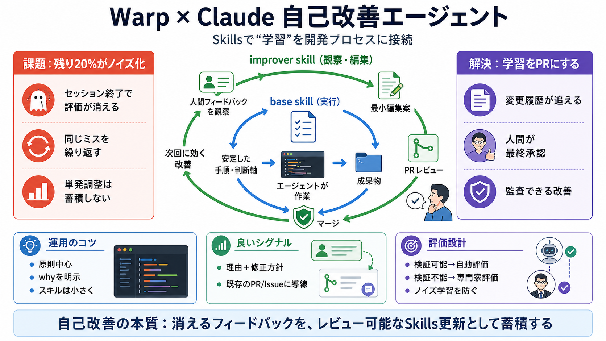

Oz: The Orchestration Platform for Cloud Agents by Warp
Title: Oz: The Orchestration Platform for Cloud Agents by Warp The Wayback Machine - https://web.archive.org/web/2026041…

Title: Oz: The Orchestration Platform for Cloud Agents by Warp The Wayback Machine - https://web.archive.org/web/2026041…
Title: Oz: The Orchestration Platform for Cloud Agents by Warp # Oz is the orchestration platform for cloud agents. Spin…
Title: Oz: The Orchestration Platform for Cloud Agents by Warp # Break out of your shell. # Break out of your shell. # O…
Title: Oz: The Orchestration Platform for Cloud Agents by Warp # Break out of your shell. # Break out of your shell. # O…
### Agents automatically improve with self-improvement loops and persistent memory Improve the agent inner loop with pe…